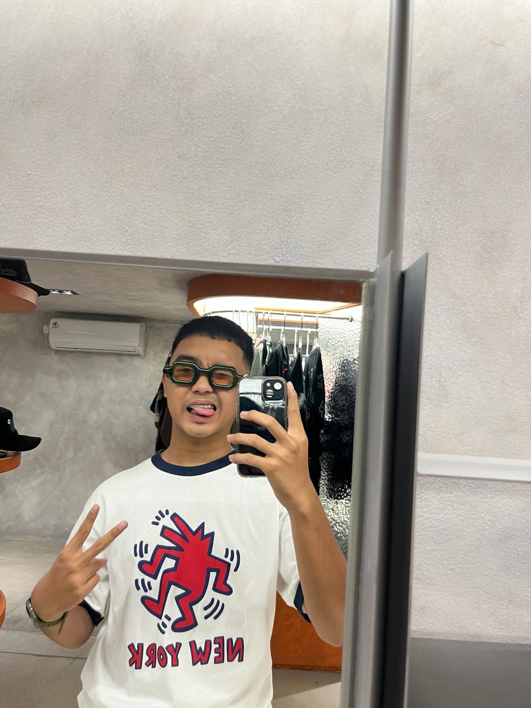
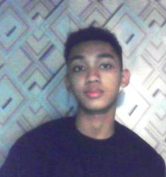

arsip reformasi digital
EDISI KHUSUS
Tentang Kami
Para Pencipta
— Pembuat Sejarah —

Athallah Izzan Bianta
Bertanggung jawab dalam proses riset dan pengumpulan materi yang digunakan pada website Reformasi 1998. Melakukan pencarian sumber informasi, seleksi referensi yang relevan, serta membantu memastikan keakuratan data dan isi materi yang disajikan. Berperan dalam mendukung penyusunan konten agar informasi yang ditampilkan dapat dipahami dengan baik oleh pengguna.
Klipang, Indonesia

Okan Sandi Kurniawan
Bertanggung jawab dalam pengembangan website secara keseluruhan, mulai dari perancangan tampilan, implementasi fitur, penyusunan struktur materi, hingga integrasi konten sejarah Reformasi 1998. Selain itu melakukan riset, pengolahan informasi, serta memastikan pengalaman pengguna berjalan dengan baik pada setiap halaman website.
Ngesrep, Indonesia
HAIDAR RAFI JAELANI
Membantu proses pengumpulan referensi dan informasi terkait peristiwa Reformasi 1998 serta mendukung penyusunan materi yang digunakan dalam website. Berkontribusi dalam verifikasi data dan pencarian sumber pendukung selama proses pengembangan proyek.
Kebonharjo, Indonesia